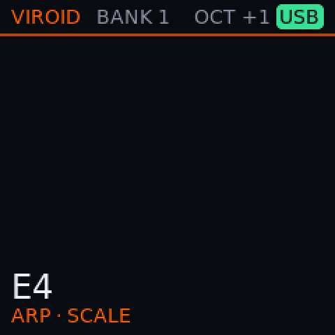
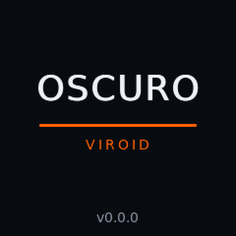

Viroid
One thing, done properly: synthesis.
Viroid turns your SMK-37 into a true instrument. Virus-inspired oscillators, filters and modulation, heavily optimised for this hardware, loading original Virus patches. It does not try to be a groovebox, a sampler and a looper too.
What it does
- 1
A Virus-inspired voice Test build
Two oscillators with sync and FM, a sub oscillator, noise, a ring modulator, two filters in the Virus's four routings, saturation, two envelopes and three LFOs.
- 2
HyperSaw Test build
Either oscillator can become a stack of up to nine detuned saws, with density and spread on two knobs. A setting caps the total so you decide how much of the CPU it may take.
- 3
Original Virus patches Test build
Send Access Virus A, B, C and TI patches from your computer and they play, including the delay and reverb stored in them and the TI's LFO shapes.
- 4
Measured, not guessed Test build
Filter, envelope and LFO curves follow measurements of a Virus TI, so a patch behaves the way its maker intended.
- 5
Voices that adapt Test build
Polyphony follows the headroom left after the screen and the controls instead of cutting voices at random. Max Voices sets your own ceiling.
- 6
Both cores, a fast clock Verified on unit
Voices are shared between the chip's two cores, and the chip runs at 382 MHz, measured on the unit.
- 7
Modulation matrix Planned
Six slots, three destinations each, signed amounts. The editor is done; making the routes audible is the next step.
On the screen




Stats for nerds
Averages from one unit and a test build; they differ from build to build and with what you play. Shown for the curious, not as promises.
- Core clock
- 382 MHzBuild: 0.80 test builds · Source: docs/STATUS.md
- With about six voices sounding
- 60–65 % audio loadBuild: 0.80.0 test, a Virus TI patch · Source: docs/test-specs/CP3_controls_reserve.md
- Notes at once in the Viroid build
- 8 notesBuild: Viroid build · Source: docs/user/README.md